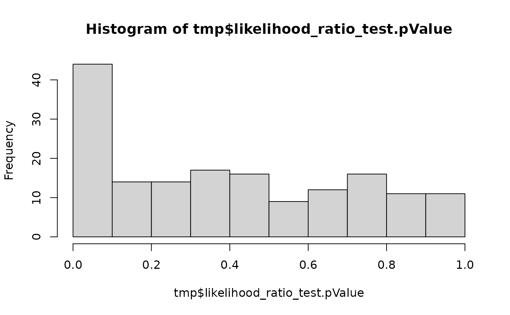

Likelihood ratio test
Usage
LR_test(
complete_models,
model_name,
complete_models_int,
model_name_int,
subject_id = "protein_Id",
path = NULL
)See also
Other modelling:
AnovaExtractor,
Contrasts,
ContrastsDEqMSFacade,
ContrastsDEqMSVoomFacade,
ContrastsFacadeBase,
ContrastsFirth,
ContrastsFirthFacade,
ContrastsFirthNestedFacade,
ContrastsLMFacade,
ContrastsLMImputeFacade,
ContrastsLMMissingFacade,
ContrastsLimma,
ContrastsLimmaFacade,
ContrastsLimmaImputeFacade,
ContrastsLimmaVoomFacade,
ContrastsLimmaVoomImputeFacade,
ContrastsLimpaFacade,
ContrastsLimpaNestedFacade,
ContrastsLmerNestedFacade,
ContrastsMissing,
ContrastsModerated,
ContrastsModeratedDEqMS,
ContrastsPlotter,
ContrastsRLMFacade,
ContrastsROPECA,
ContrastsROPECANestedFacade,
ContrastsRfitFacade,
ContrastsRfitImputeFacade,
ContrastsTable,
INTERNAL_FUNCTIONS_BY_FAMILY,
Model,
ModelFirth,
ModelLimma,
StrategyLM,
StrategyLimma,
StrategyLimpa,
StrategyLmer,
StrategyLogistf,
StrategyRLM,
StrategyRfit,
build_contrast_analysis(),
build_model(),
build_model_glm_peptide(),
build_model_glm_protein(),
build_model_impute(),
build_model_limma(),
build_model_limma_impute(),
build_model_limma_voom(),
build_model_limma_voom_impute(),
build_model_limpa(),
build_model_logistf(),
compute_borrowed_variance(),
compute_borrowed_variance_limma(),
compute_contrast(),
compute_lmer_contrast(),
contrasts_fisher_exact(),
df.residual.rfit_prolfqua(),
get_anova_df(),
get_complete_model_fit(),
get_p_values_pbeta(),
group_label(),
impute_refit_singular(),
is_singular_lm(),
linfct_all_possible_contrasts(),
linfct_factors_contrasts(),
linfct_from_model(),
linfct_matrix_contrasts(),
list_facades(),
lookup_facade(),
merge_contrasts_results(),
model_analyse(),
model_summary(),
moderated_p_deqms(),
moderated_p_deqms_long(),
moderated_p_limma(),
moderated_p_limma_long(),
new_imputed_model(),
pivot_model_contrasts_to_wide(),
plot_lmer_peptide_predictions(),
register_facade(),
sigma.rfit_prolfqua(),
sim_build_models_lm(),
sim_build_models_lmer(),
sim_build_models_logistf(),
sim_make_model_lm(),
sim_make_model_lmer(),
strategy_limma(),
strategy_limpa(),
strategy_logistf(),
summary_ROPECA_median_p.scaled(),
unregister_facade(),
vcov.rfit_prolfqua()
Examples
data_2Factor <- prolfqua::sim_lfq_data_2factor_config(
Nprot = 200,
with_missing = TRUE,
weight_missing = 2)
#> creating sampleName from file_name column
#> completing cases
#> completing cases done
#> setup done
pMerged <- LFQData$new(data_2Factor$data, data_2Factor$config)
pMerged$response()
#> [1] "abundance"
pMerged$factors()
#> # A tibble: 16 × 4
#> sample sampleName Treatment Background
#> <chr> <chr> <chr> <chr>
#> 1 A_V1 A_V1 A X
#> 2 A_V2 A_V2 A X
#> 3 A_V3 A_V3 A X
#> 4 A_V4 A_V4 A X
#> 5 B_V1 B_V1 B X
#> 6 B_V2 B_V2 B X
#> 7 B_V3 B_V3 B X
#> 8 B_V4 B_V4 B X
#> 9 C_V1 C_V1 B Z
#> 10 C_V2 C_V2 B Z
#> 11 C_V3 C_V3 B Z
#> 12 C_V4 C_V4 B Z
#> 13 Ctrl_V1 Ctrl_V1 A Z
#> 14 Ctrl_V2 Ctrl_V2 A Z
#> 15 Ctrl_V3 Ctrl_V3 A Z
#> 16 Ctrl_V4 Ctrl_V4 A Z
formula_condition_and_Batches <-
prolfqua::strategy_lm("abundance ~ Treatment + Background")
modCB <- prolfqua::build_model(
pMerged,
formula_condition_and_Batches)
#> Warning: There were 25 warnings in `dplyr::mutate()`.
#> The first warning was:
#> ℹ In argument: `linear_model = purrr::map(data, model_strategy$model_fun, pb =
#> pb)`.
#> ℹ In group 33: `protein_Id = "Br6sVH~3679"`.
#> Caused by warning:
#> ! contrasts can be applied only to factors with 2 or more levels
#> ℹ Run `dplyr::last_dplyr_warnings()` to see the 24 remaining warnings.
formula_condition <-
prolfqua::strategy_lm("abundance ~ Treatment")
modC <- prolfqua::build_model(
pMerged,
formula_condition)
#> Warning: There were 19 warnings in `dplyr::mutate()`.
#> The first warning was:
#> ℹ In argument: `linear_model = purrr::map(data, model_strategy$model_fun, pb =
#> pb)`.
#> ℹ In group 33: `protein_Id = "Br6sVH~3679"`.
#> Caused by warning:
#> ! contrasts can be applied only to factors with 2 or more levels
#> ℹ Run `dplyr::last_dplyr_warnings()` to see the 18 remaining warnings.
tmp <- LR_test(modCB$model_df, "modCB", modC$model_df, "modB")
hist(tmp$likelihood_ratio_test.pValue)
